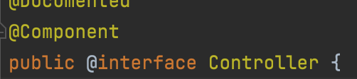
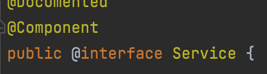
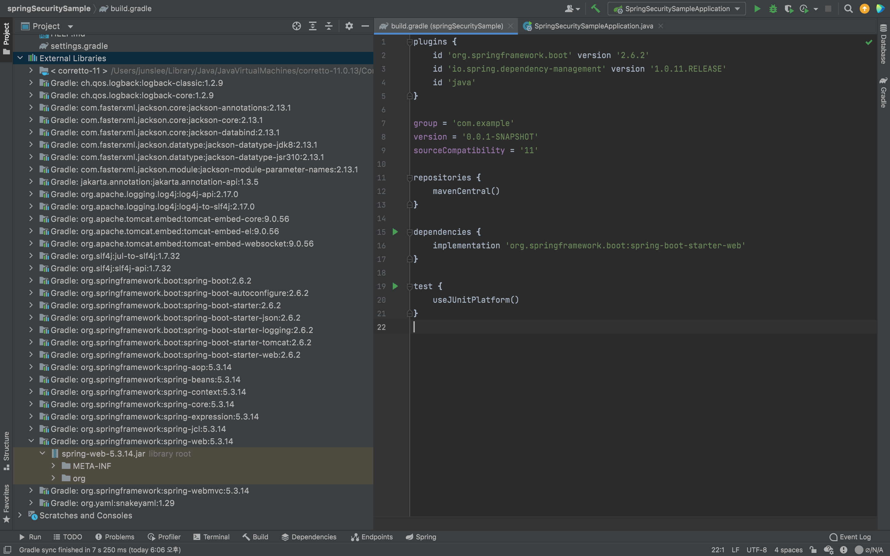
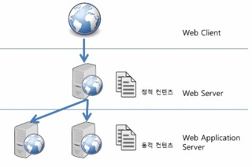

스프링 핵심 개념
스프링의 핵심 개념은 의존성 주입(Dependency Injection)과 제어의 역전(Inversion Of Control)에 있습니다.
의존성 주입이란, 외부에서 객체를 생성한 후 주입시켜주는 것을 말합니다. 다음 코드와 같이 말이죠.
1 | @Service |
1 | @Controller |
위의 코드에서 보이는 @Controller와 @Service는 무엇일까요?
간단히 설명하면, 클래스에 위의 애너테이션을 명시하면 해당 클래스는 스프링이 관리하는 객체로 등록을 하겠다는 의미입니다.
여기서 스프링에서 관리하는 객체를 스프링 빈(Bean)이라고 부르는데요, 아래에서 좀 더 자세히 알아보도록 하겠습니다.
아무튼 의존성 주입이 되는 객체를 스프링에서 관리해 주기 때문에 개발자는 비즈니스 로직에만 집중할 수 있고,
이렇게 프로그램의 주도권이 개발자에게 있는 것이 아닌 프레임워크에게 주도권이 역전되었다고 하여 제어의 역전이라고 불립니다.
이들로 인해서 객체간의 관심사를 분리시키고 결합도를 낮추는 방식으로 어플리케이션을 개발 할 수 있으며이러한 프로그램은 단위 테스트와 유지보수 또한 용이하기 때문에 보다 높은 퀄리티의 프로그램을 개발 할 수 있습니다.
스프링 IOC 컨테이너와 스프링 빈
스프링 프레임워크는 스프링 빈(Bean)들을 생성하고 관리하는 스프링 컨테이너를 가지고 있습니다.
스프링 컨테이너는 Bean Factory 와 이를 상속한 ApplicationContext 2가지 유형이 존재합니다.
스프링 빈(Bean)은 스프링 컨테이너에서 관리하는 자바 객체를 가리킵니다.
ApplicationContext가 만들어서 그 안에 담고있는 객체이며, ApplicationContext.getBean()으로 얻어지는 객체입니다.
그렇다면 스프링 컨테이너에 어떻게 빈을 등록할까요?
컴포넌트 스캔(Component Scan)이란 방법인데요, 간단히 설명하면 @Component 애너테이션이 붙은 클래스를 찾아 빈으로 등록하는 방법입니다.
그럼 컴포넌트 스캔을 하는데 위의 예제에서 @Controller와 @Service 애너테이션을 추가 해주는 것과 무슨 상관일까요?
 인텔리제이의 코드 네비게이팅 기능을 이용하여 보니, 위와 같이 두 애너테이션 모두 @Component를 정의하고 있다는 것을 알 수 있습니다.
스프링 vs 스프링 부트
스프링이 기존의 문제를 해결해주고 많은 이점을 가져다줬지만, 한 가지 어려움에 직면해 있었습니다.
기본 프로젝트를 세팅하는데 너무 많은 시간이 걸리게 되면서 이런 부분이 개발자에게 큰 부담이 된다는 점이었습니다.
스프링 부트는 이러한 단점을 없애기 위해 만들어진 스프링 프로젝트입니다.
그럼 스프링 부트는 위의 문제를 어떻게 해결했을까요?
- 스프링 부트는 자동 설정을 이용하여 어플리케이션 개발에 필요한 모든 내부 디펜던시(dependency)를 관리합니다.
- 스프링 부트는 spring-boot-starter라는 미리 설정된 스타터 프로젝트를 제공하여 복잡도를 줄였고, 이로써 개발자는 라이브러리 간의 버전 호환성을 신경 쓸 필요가 없게 되었습니다.
아래 사진은 build.gradle 파일(오른쪽)에 spring-boot-starter-web 의존성을 추가하였을 때 자동으로 클래스 패스(class path)에 생기는 jar 파일들(왼쪽) 입니다.

몇가지 스프링 부트 스타터 프로젝트를 소개하자면 다음과 같습니다.
- spring-boot-starter-web: 웹, RESTful 어플리케이션 개발을 위한 모듈
- spring-boot-starter-test: 단위테스트 및 통합테스트를 위한 모듈
- spring-boot-starter-jdbc: 기본적인 jdbc 모듈
- spring-boot-starter-security: 어플리케이션 보안(인증과 권한)을 위한 스프링 시큐리티 프로젝트 모듈
- spring-boot-starter-data-jpa: spring data jpa with hibernate 모듈
톰캣 Tomcat
스프링 부트 기본 내장 웹 서버인 톰캣(Tomcat)에 대해서 알아보겠습니다.
📍 톰캣은 WAS이지만 정적 파일을 처리할 수 있는 웹 서버의 기능도 포함하고 있습니다.
톰캣은 WAS(Web Application Server)입니다.
WAS란 클라이언트의 요청을 받아 정적 컨텐츠만을 응답하는 웹 서버(Web Server)와는 다르게 동적 컨텐츠를 응답하는 서버입니다.
- 정적 컨텐츠: html, css, js
- 동적 컨텐츠: DB 접근이나 비즈니스 로직 처리가 필요한 리소스
일반적으로 웹 프로그래밍의 경우 다음과 같은 구조를 통해 클라이언트와 통신을 하게 됩니다.

그렇다면 Web Server와 WAS를 따로 두는 이유는 무엇일까요? 이유는 다음과 같습니다.
- 각 요청에 따른 업무를 나누어서 목적에 따른 성능상의 장점을 살릴 수 있습니다. (모든 정적 컨텐츠를 웹서버에서 처리해주면 WAS의 부담을 덜어줄 수 있겠죠.)
- 클라이언트가 직접 WAS와 통신하지 못하게 중계 역할을 해서 보안적으로 안전하게 할 수 있습니다.
- 웹 서버가 로드 밸런싱 역할을 하게 만들어 하나의 웹 서버에 여러대의 WAS를 연결할 수 있습니다. (하나의 WAS가 처리하는 요청이 줄어들어 안정적인 서비스 운영이 가능합니다.)
참조 문헌
https://dzone.com/articles/spring-vs-spring-boot
https://taes-k.github.io/2020/02/16/servlet-container-spring-container/